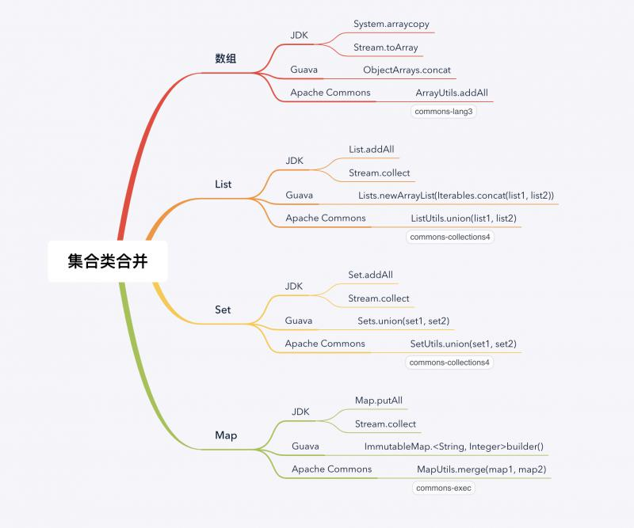

集合类可谓是学习必知、编程必用、面试必会的，而且集合的操作十分重要；本文主要讲解如何合并集合类，如合并两个数组，合并两个List等。通过例子讲解几种不同的方法，有JDK原生的方法，还有使用第三库的方法。

引入十分常用的优秀的第三方库Guava和Apache Commons；通过配置pom.xml如下：
<dependency>
<groupId>com.google.guava</groupId>
<artifactId>guava</artifactId>
<version>28.1-jre</version>
</dependency>
<dependency>
<groupId>org.apache.commons</groupId>
<artifactId>commons-collections4</artifactId>
<version>4.4</version>
</dependency>
<dependency>
<groupId>org.apache.commons</groupId>
<artifactId>commons-exec</artifactId>
<version>1.3</version>
</dependency>
<dependency>
<groupId>org.apache.commons</groupId>
<artifactId>commons-lang3</artifactId>
<version>3.5</version>
</dependency>最新版本可以去官网搜索查看。
数据准备：
String[] arr1 = {"desk", "pen", "cup"};
String[] arr2 = {"phone", "keyboard"};
String[] expected = new String[]{"desk", "pen", "cup", "phone", "keyboard"};
String[] result;JDK为我们提供了一个复制数组的方法，这个方法参数较多，使用不是很灵活，但它是一个本地方法，效率高。代码如下：
//System.arraycopy
result = new String[arr1.length + arr2.length];
System.arraycopy(arr1, 0, result, 0, arr1.length);
System.arraycopy(arr2, 0, result, arr1.length, arr2.length);
assertArrayEquals(expected, result);Java 8的Stream提供了转化成数组的方法，可以通过将数组转化成Stream，合并Stream后再转化为数组，具体代码如下：
//Stream
result = Stream.concat(Arrays.stream(arr1), Arrays.stream(arr2))
.toArray(String[]::new);
assertArrayEquals(expected, result);使用的时候要注意Stream.toArray()的两个方法，例子中需要使用带参数的。
Guava提供了类ObjectArrays进行数组合并，注意需要指定数组存储的对象的类型，代码如下：
//Guava
result = ObjectArrays.concat(arr1, arr2, String.class);
assertArrayEquals(expected, result);Apache Commons提供了ArrayUtils进行合并，代码如下：
//Apache Commons
result = ArrayUtils.addAll(arr1, arr2);
assertArrayEquals(expected, result);数据准备：
List<String> list1 = asList("desk", "pen", "cup");
List<String> list2 = asList("phone", "keyboard");
List<String> expected = asList("desk", "pen", "cup", "phone", "keyboard");
List<String> result = new ArrayList<>();List接口定义了addAll的方法，代码如下：
//list.addAll
result.addAll(list1);
result.addAll(list2);
assertEquals(expected, result);过程大体相似，合并Stream，然后转化为List，代码如下：
//Stream
result = Stream.concat(list1.stream(), list2.stream())
.collect(Collectors.toList());
assertEquals(expected, result);Guava提供了将Iterable转化为List的方法，代码如下：
//Guava
result = Lists.newArrayList(Iterables.concat(list1, list2));
assertEquals(expected, result);Apache Commons的工具类ListUtils提供了union()方法可以直接合并，代码如下：
//Apache Commons
result = ListUtils.union(list1, list2);
assertEquals(expected, result);数据准备：
Set<String> set1 = Sets.newHashSet("desk", "pen", "cup", "phone", "keyboard");
Set<String> set2 = Sets.newHashSet("phone", "keyboard");
Set<String> expected = Sets.newHashSet("desk", "pen", "cup", "phone", "keyboard");
Set<String> result = Sets.newHashSet();同样，Set接口也有addAll()方法，代码如下：
//set.addAll
result.addAll(set1);
result.addAll(set2);
assertEquals(expected, result);先合并Stream，再转化成Set，代码如下：
//Stream
result = Stream.concat(set1.stream(), set2.stream())
.collect(Collectors.toSet());
assertEquals(expected, result);一个方法搞定，代码如下：
//Guava
result = Sets.union(set1, set2);
assertEquals(expected, result);同样是一个方法，代码如下：
//Apache Commons
result = SetUtils.union(set1, set2);
assertEquals(expected, result);代码如下：
Map<String, Integer> map1 = ImmutableMap.of("One", 1, "Two", 2);
Map<String, Integer> map2 = ImmutableMap.of("Three", 3);
Map<String, Integer> expected = ImmutableMap.of("One", 1, "Two", 2, "Three", 3);
Map<String, Integer> result = Maps.newHashMap();使用Map接口提供的putAll()方法，代码如下：
//map.putAll
result.putAll(map1);
result.putAll(map2);
assertEquals(expected, result);使用Stream进行合并Map相对麻烦一些，代码如下：
//Stream
result = Stream.of(map1, map2)
.map(Map::entrySet)
.flatMap(Collection::stream)
.collect(Collectors.toMap(Map.Entry::getKey, Map.Entry::getValue));
assertEquals(expected, result);使用builder()方法，代码如下：
//Guava
result = ImmutableMap.<String, Integer>builder()
.putAll(map1)
.putAll(map2)
.build();
assertEquals(expected, result);一个`merge()方法搞定，代码如下：
//Apache Commons
result = MapUtils.merge(map1, map2);
assertEquals(expected, result);本文分别列举了数组、List、Set和Map的合并的多种方法，虽然代码简单，理解也容易，但这些方法应该熟练掌握。可以收藏一下，必要的时间查一查。
欢迎关注公众号<南瓜慢说>，将持续为你更新...
欢迎多多交流。
多读书，多分享；多写作，多整理。